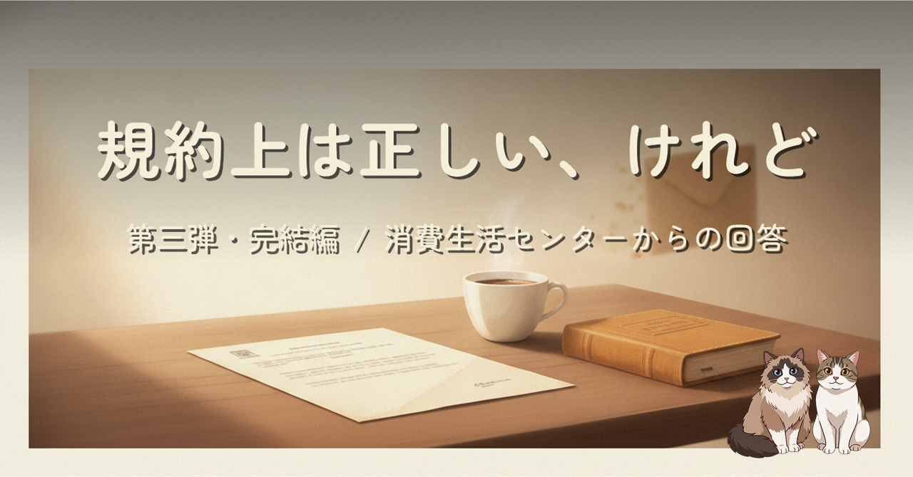
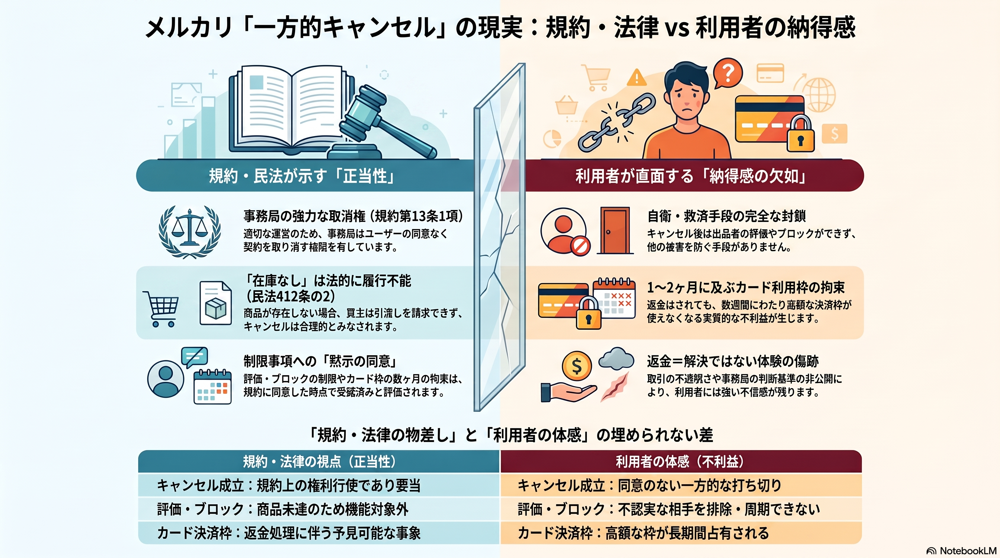
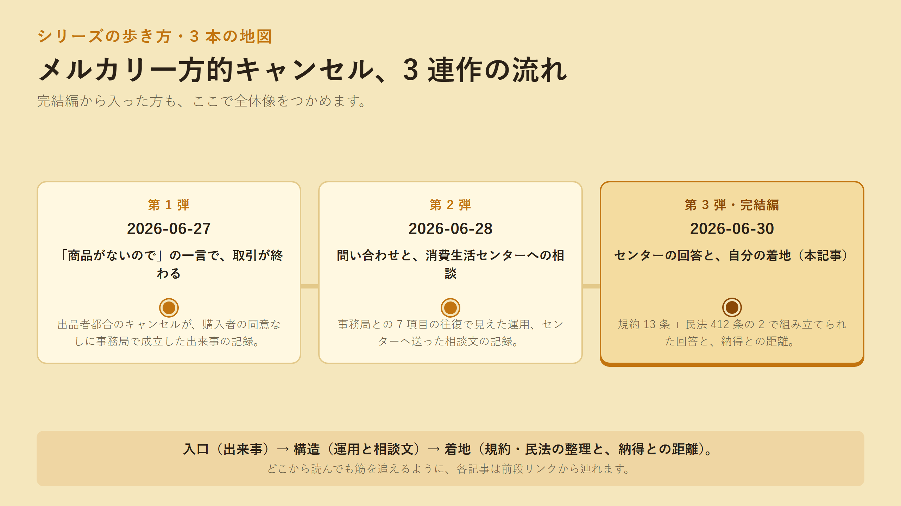
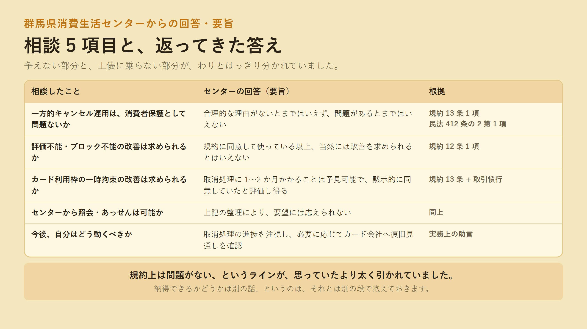
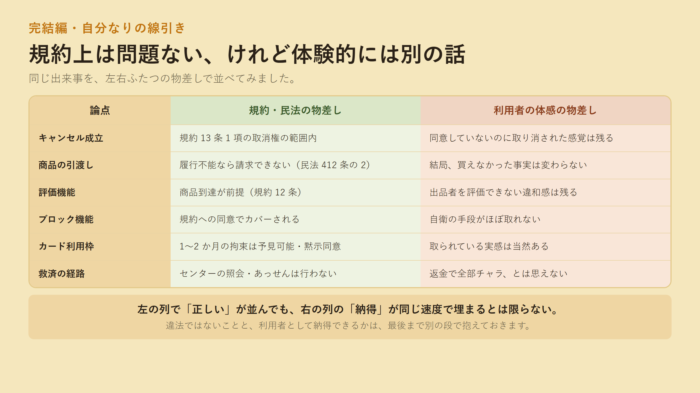

メルカリで購入者の同意なくキャンセルされた約 9.6 万円の取引、その完結編です。群馬県消費生活センターから返ってきた答えは、メルカリ利用規約 13 条 1 項と民法 412 条の 2 第 1 項から組み立てられていて、合理的な理由がないとまではいえず、あっせんも行えない、というものでした。違法ではないことと、利用者として体験的に納得できるかは別の話。その線を残して、シリーズを閉じます。

続編なので、前提と経緯は前 2 本をご参照ください。

群馬県の消費生活センターからの回答は、規約と民法の二段で組み立てられていました。事務局には規約 13 条 1 項に基づく取消権があり、「商品がない」場合は民法 412 条の 2 第 1 項により履行不能となる。評価・ブロック・カード枠の一時拘束は、規約に同意して使っている以上、当然に改善は求められない。したがって、センターからメルカリへの照会・あっせんも行えない。冷静で、筋の通った回答でした。
それと同時に、利用者として体験的に納得できるかどうかは、また別の段にあります。返金されれば全部チャラ、というわけではない。当たり前のようで見落とされがちなその一段を、シリーズの締めとして書き残しました。

